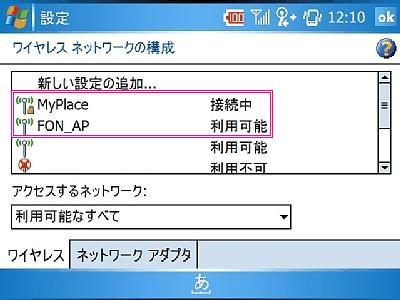
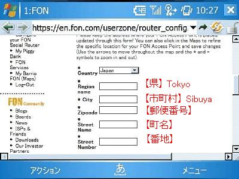
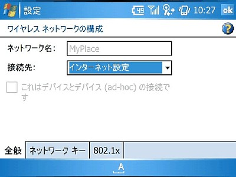
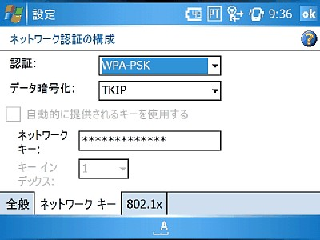

W-ZERO3 で FON 一発設定
2007年2月4日 更新
他のユーザに提供するパブリックなアクセスポイントです。 セキュリティはかかっていません。 ※「MyPlace」とは、 家庭内で使うプライベートなアクセスポイントです。 WPAによるセキュリティが標準でかかっています。 |
 |
|
自分のFONスポットを登録します。この工程を踏むことで、 メンバータイプ： linus として、 他のユーザのアクセスポイントを利用できる権限が与えられます。
自分のFONスポットを他のユーザに無料で使ってもらうことで、 自分も他のFONスポットを無料で使うことができるユーザタイプです。 |
 |
W-ZERO3からプライベートな「MyPlace」へ接続します。
|
 |  |
| 「La Fonera」仕様 | |
|---|---|
| 無線規格 | IEEE 802.11g / IEEE 802.11b |
| 帯域幅 | 54 （単位・Mbps） |
| セキュリティ | WiFi Protected Access (WPA) / WEP / WPA2 |
| 寸法(W×H×D) | 93.5×25.5×70 (mm) |
| 重量 | 95g (アンテナ除) |
管理人：いわだら [ date18@gmail.com ]